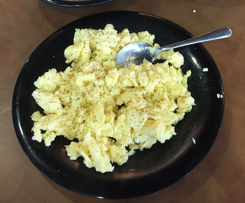

Eggs
Back to homepage

Description:
This is the first thing I learned to cook because I was feeling ambitious with it.
JMU definitely makes them better than I ever could. Go Dukes.
Ingredients:
- 3-4 eggs
- Pepper if you're not boring
Steps:
- Crack each egg against a fork into a bowl. Remove shell pieces that fall in as you go.
- Mix the eggs well with the fork until it is runny.
- Pour mix into a pan (stove set to medium/high heat)
- As the mix becomes more solid, bunch it together to make a smaller patty.
- Once the bottom is solid (or a bit brown), flip the egg patty.
- Wait for the other side to cook. Press the "wet" areas into the pan with a spatula.
- Once the patty is solid and well cooked on both sides, you can either chop it up
into bite sized pieces or into a smaller "scrambled" mess.
- Remove eggs from the pan and put onto a plate.
- Cool people throw on copious amounts of pepper before eating.
Back to top
Back to homepage